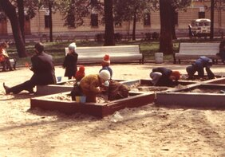
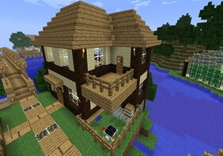
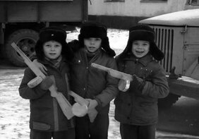
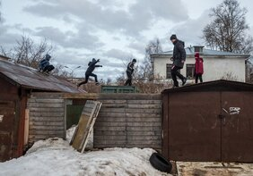

Возвращаемся в детство: сравниваем дворовые игры с современными творениями
Да, в век современных технологий каждый из нас львиную долю своего времени проводит в интернете или в видеоиграх. Но согласитесь, это несравнимо с тем, как мы проводили детство. Уверен, иногда вы окунаетесь в воспоминания и переноситесь в любимый двор, где вы выросли и провели беззаботную молодость.
И ведь досуг на этом небольшом участке города был самый разнообразный. Все зависело только от нашей фантазии. Сначала мы ковырялись в песочнице, затем бегали по улице, играя в догонялки. После этого начали собираться у подъездов и петь песни под гитару. Это лишь малая часть того, что мы пережили.
К сожалению, далеко не всем удалось застать время без интернета. Не подумайте, я не пытаюсь рассуждать как «старый дед», говоря, что «в наше время было лучше». Я слишком молод для этого. Но мне удалось застать и время бурных детских фантазий на улице, и стремительную компьютеризацию нашего мира. И то, и другое время — прекрасны.
Именно поэтому мне захотелось сравнить эти два периода. Что если сопоставить развлечения нашей молодости и современные компьютерные игры? Будьте уверены, в них есть кое-что общее.
Игра в песочнице — Minecraft
Что могло быть прекрасней в 4-5 лет, чем лепка куличиков из песка? Или постройка замка? Любой из нас превращался в самого настоящего архитектора, оказываясь в песочнице.

Именно поэтому вышедший в 2009 году Minecraft так полюбился всему миру. Большинство из нас познакомились с этой игрой в подростковом возрасте и сразу же окунулись в недалекое детство. В этой игре мы смогли воплотить все свои самые смелые задумки и идеи, не реализованные в песочнице.

Интерес к обеим играм зависел только от нашей фантазии. Недаром даже сам жанр получил название «песочница».
«Войнушка» — Battlefield, Call of Duty, Counter-Strike
Взяв в руки палку, похожую на ППШ, и поделившись с товарищами на две команды, мы начинали самое реалистичное погружение в военные времена. И ведь как страшно было получить пулю в плечо от товарища по двору, который был твоим противником! Но если это все-таки случалось, в каждом из нас открывался самый настоящий актер. Приходилось изображать невыносимую боль, дабы убедить сослуживцев в правдоподобности случившегося.

Как только на экранах ПК начали появляться первые шутеры, мы повесили свои любимые палки на гвоздь и отправились в компьютерные клубы, где проводили свободное время и просаживали кучу денег. Но это того стоило, ведь мы вновь могли погрузиться в самые серьезные боевые действия в разных уголках планеты. Вдобавок к обычному оружию, в некоторых стрелялках нам позволили еще и управлять боевой техникой, что добавило острых ощущений.
Прятки — Dead by Daylight, Friday the 13th: The Game
В каждом дворе или недалеко за его пределами было множество пустырей, заброшенных построек и зарослей. Именно на этой локации проходила одна из самых захватывающих игр нашего детства — прятки.
Вспомните, какой адреналин бурлил внутри нас, когда мы сидели в кустах, а неподалеку бродил голящий и пытался обнаружить наши силуэты. И далеко не все любили голить, поэтому каждый старался спрятаться более надежно, чтобы его точно не смогли найти. Именно из-за этих ощущений игра в прятки была самой любимой в моем детстве.
Элементы пряток можно найти даже в играх современности. Стоило только добавить персонажей из ужастиков, которые мы с замиранием сердца смотрели по ночам, как получились прекрасные игры с мультиплеером, где нам приходится спасаться от Джейсона и подобных ему монстров, прячась под кроватями и в кустах. Ощущения не те, но ностальгия нахлынивает.
Паркур — Assassin’s Creed, Mirror’s Edge
Вы помните, как насмотревшись культовый фильм Ямакаси, мы начинали изображать из себя паркуристов, прыгая по гаражам местного кооператива, находившегося неподалеку? Именно во время этих экстремальных приключений дети и получили большинство травм в детстве: переломы, ушибы, выбитые зубы и слезы боли.

Игры про паркур так полюбились большинству из нас не только из-за захватывающего геймплея, но и благодаря воспоминаниям молодости. Да, такие высокие здания, как в серии игр про убийц в капюшонах, нам покорить не удалось, но именно сейчас мы наверстываем упущенное. Да и вряд ли мы смогли бы выдержать такие нагрузки на руки и, скорей всего, сорвались бы в первую же пропасть.
Исследование «заброшек» — Outlast
А было ли вам страшно исследовать темные помещения старых полуразваленных зданий, которые не давали вам покоя, так и маня своей загадочностью? Собравшись командой энтузиастов, ребята отправлялись в очередное приключение, взяв с собой фонарики и пару палок для самообороны. Чем вам не Outlast?
Адреналин зашкаливал, когда в одной из комнат вы натыкались на какого-нибудь спящего бомжика. Он просыпался и начинал рычать на вас, ведь он был недоволен, что его разбудили. Никакой монстр из самого страшного хоррора рядом с ним не стоит.
Обязательно делитесь в комментариях историями из детства! А также предлагайте свои сравнения любимых игр детства с современными прототипами.